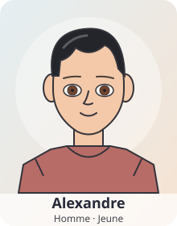
c01 — Alexandre
Cheveux : noir ; longueur : court ; sans lunettes ; peau claire ; Homme ; sans boucles d’oreilles ; sans piercing ; vêtement : tshirt ; yeux marron ; Jeune ; pilosité : aucune.
Catalogue fictif. Planche de contrôle des attributs ; aucun jeu réel n’est exécuté ici.

Cheveux : noir ; longueur : court ; sans lunettes ; peau claire ; Homme ; sans boucles d’oreilles ; sans piercing ; vêtement : tshirt ; yeux marron ; Jeune ; pilosité : aucune.
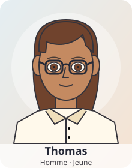
Cheveux : brun ; longueur : long ; avec lunettes ; peau intermediaire ; Homme ; sans boucles d’oreilles ; sans piercing ; vêtement : chemise ; yeux marron ; Jeune ; pilosité : aucune.
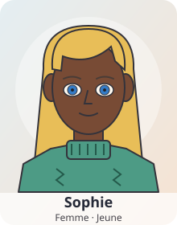
Cheveux : blond ; longueur : long ; sans lunettes ; peau foncee ; Femme ; sans boucles d’oreilles ; sans piercing ; vêtement : pull ; yeux bleu ; Jeune ; pilosité : aucune.
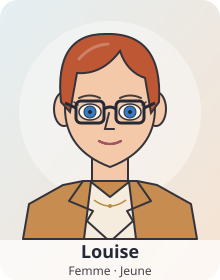
Cheveux : roux ; longueur : court ; avec lunettes ; peau claire ; Femme ; sans boucles d’oreilles ; sans piercing ; vêtement : veste ; yeux bleu ; Jeune ; pilosité : aucune.
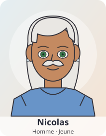
Cheveux : blanc ; longueur : long ; sans lunettes ; peau intermediaire ; Homme ; avec boucles d’oreilles ; sans piercing ; vêtement : tshirt ; yeux vert ; Jeune ; pilosité : moustache.
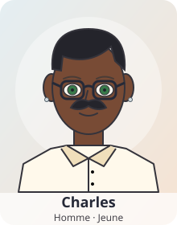
Cheveux : noir ; longueur : court ; avec lunettes ; peau foncee ; Homme ; avec boucles d’oreilles ; sans piercing ; vêtement : chemise ; yeux vert ; Jeune ; pilosité : moustache.
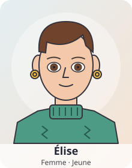
Cheveux : brun ; longueur : court ; sans lunettes ; peau claire ; Femme ; avec boucles d’oreilles ; sans piercing ; vêtement : pull ; yeux marron ; Jeune ; pilosité : aucune.
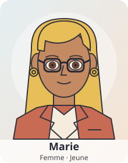
Cheveux : blond ; longueur : long ; avec lunettes ; peau intermediaire ; Femme ; avec boucles d’oreilles ; sans piercing ; vêtement : veste ; yeux marron ; Jeune ; pilosité : aucune.
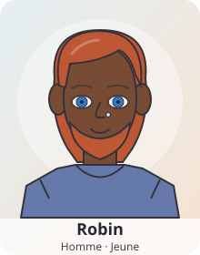
Cheveux : roux ; longueur : long ; sans lunettes ; peau foncee ; Homme ; sans boucles d’oreilles ; avec piercing au nez ; vêtement : tshirt ; yeux bleu ; Jeune ; pilosité : barbe.
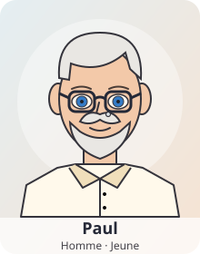
Cheveux : blanc ; longueur : court ; avec lunettes ; peau claire ; Homme ; sans boucles d’oreilles ; avec piercing au nez ; vêtement : chemise ; yeux bleu ; Jeune ; pilosité : les_deux.
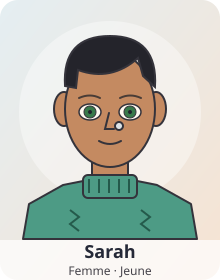
Cheveux : noir ; longueur : court ; sans lunettes ; peau intermediaire ; Femme ; sans boucles d’oreilles ; avec piercing au nez ; vêtement : pull ; yeux vert ; Jeune ; pilosité : aucune.
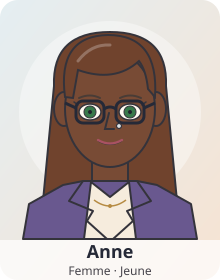
Cheveux : brun ; longueur : long ; avec lunettes ; peau foncee ; Femme ; sans boucles d’oreilles ; avec piercing au nez ; vêtement : veste ; yeux vert ; Jeune ; pilosité : aucune.
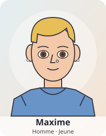
Cheveux : blond ; longueur : court ; sans lunettes ; peau claire ; Homme ; avec boucles d’oreilles ; avec piercing au nez ; vêtement : tshirt ; yeux marron ; Jeune ; pilosité : aucune.
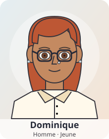
Cheveux : roux ; longueur : long ; avec lunettes ; peau intermediaire ; Homme ; avec boucles d’oreilles ; avec piercing au nez ; vêtement : chemise ; yeux marron ; Jeune ; pilosité : aucune.
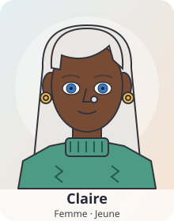
Cheveux : blanc ; longueur : long ; sans lunettes ; peau foncee ; Femme ; avec boucles d’oreilles ; avec piercing au nez ; vêtement : pull ; yeux bleu ; Jeune ; pilosité : aucune.
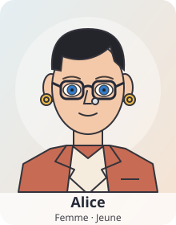
Cheveux : noir ; longueur : court ; avec lunettes ; peau claire ; Femme ; avec boucles d’oreilles ; avec piercing au nez ; vêtement : veste ; yeux bleu ; Jeune ; pilosité : aucune.
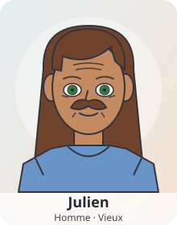
Cheveux : brun ; longueur : long ; sans lunettes ; peau intermediaire ; Homme ; sans boucles d’oreilles ; sans piercing ; vêtement : tshirt ; yeux vert ; Vieux ; pilosité : moustache.
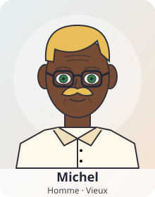
Cheveux : blond ; longueur : court ; avec lunettes ; peau foncee ; Homme ; sans boucles d’oreilles ; sans piercing ; vêtement : chemise ; yeux vert ; Vieux ; pilosité : moustache.
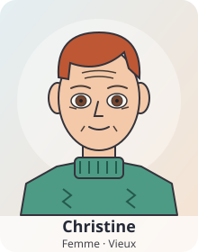
Cheveux : roux ; longueur : court ; sans lunettes ; peau claire ; Femme ; sans boucles d’oreilles ; sans piercing ; vêtement : pull ; yeux marron ; Vieux ; pilosité : aucune.
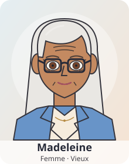
Cheveux : blanc ; longueur : long ; avec lunettes ; peau intermediaire ; Femme ; sans boucles d’oreilles ; sans piercing ; vêtement : veste ; yeux marron ; Vieux ; pilosité : aucune.
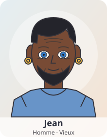
Cheveux : noir ; longueur : court ; sans lunettes ; peau foncee ; Homme ; avec boucles d’oreilles ; sans piercing ; vêtement : tshirt ; yeux bleu ; Vieux ; pilosité : barbe.
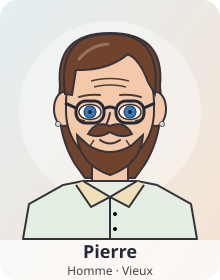
Cheveux : brun ; longueur : long ; avec lunettes ; peau claire ; Homme ; avec boucles d’oreilles ; sans piercing ; vêtement : chemise ; yeux bleu ; Vieux ; pilosité : les_deux.
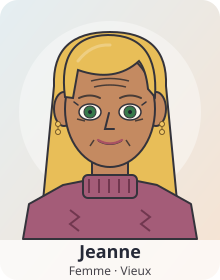
Cheveux : blond ; longueur : long ; sans lunettes ; peau intermediaire ; Femme ; avec boucles d’oreilles ; sans piercing ; vêtement : pull ; yeux vert ; Vieux ; pilosité : aucune.
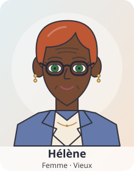
Cheveux : roux ; longueur : court ; avec lunettes ; peau foncee ; Femme ; avec boucles d’oreilles ; sans piercing ; vêtement : veste ; yeux vert ; Vieux ; pilosité : aucune.